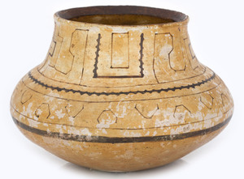

ⲕⲗⲉ, ⲕⲉⲗⲏ S, ⲕⲗⲏ, ⲭⲗⲏ B, ⲕⲉⲗⲉ F nn m, cf כלי (Calice)[1], vessel for liquids: Kr 242 S ⲕⲗⲉ ⲥⲛⲁⲩ of honey, BKU 1 333 S ]ⲧϥⲉ ⲛⲕⲉⲗⲏ of oil, CMSS 78 F ⲕ. & ⲁⲡⲁⲧ, K 151 B زير (v Fleischer De Glos 20, Almk 2 49). Cf ⲁⲕⲗⲏ.

ⲕⲗⲉ, ⲕⲉⲗⲏ S, ⲕⲗⲏ, ⲭⲗⲏ B, ⲕⲉⲗⲉ F nn m, cf כלי (Calice)[1], vessel for liquids: Kr 242 S ⲕⲗⲉ ⲥⲛⲁⲩ of honey, BKU 1 333 S ]ⲧϥⲉ ⲛⲕⲉⲗⲏ of oil, CMSS 78 F ⲕ. & ⲁⲡⲁⲧ, K 151 B زير (v Fleischer De Glos 20, Almk 2 49). Cf ⲁⲕⲗⲏ.
| view | ⲁⲕⲗⲏ, ⲁⲕⲗⲓ, ⲁⲗⲕⲏ, ⲕⲁⲗⲏ B | (noun feminine) among vessels2662 |